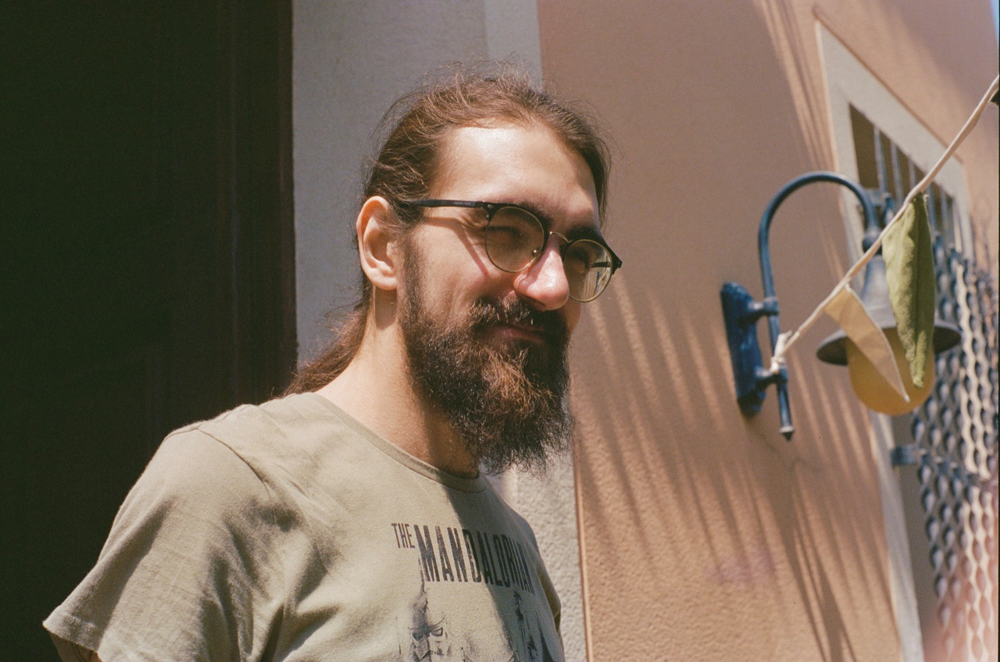
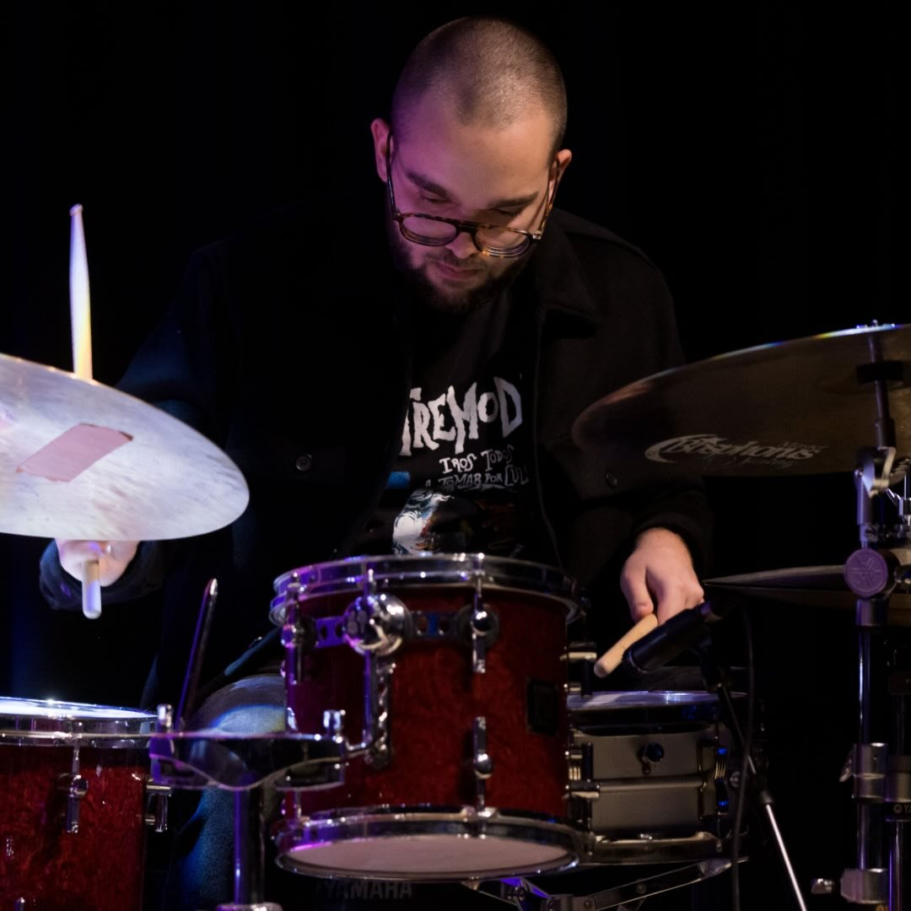
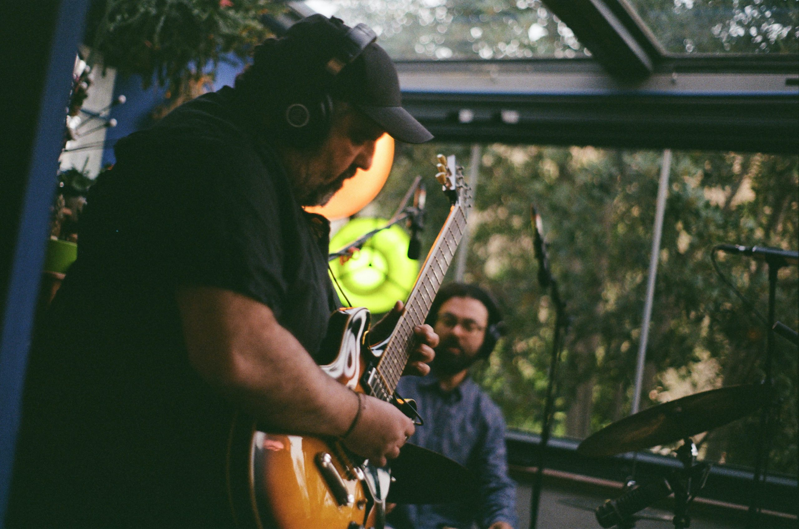

The Groovin' Collective

À. AlmirallGraduat en especialitat de jazz i música moderna a l'ESMUC (sonologia).
Ha compartit escenari amb artistes com b1n0, Henrio, Gélis o Red Pèrill entre d'altres.
Com a compositor i productor, ha treballat amb projectes artístics interdisciplinaris col·laborant amb ballarins o poetes com Feliu Formosa i també en projectes audiovisuals, entre els quals l'univers sonor del canal SX3.

Eudald LópezGraduat en especialitat d'interpretació de bateria jazz a l'ESEM.
Ha participat en projectes de músics com David Pastor o Marcel·lí Bayer, entre d'altres.
Groovin' Around va començar tocant junts. Sense ell el projecte no seria una realitat.
Sempre buscant el millor so i participant activament amb els arranjaments dels temes.
Tocar plegats sempre és un plaer.

X. Barrios, K. Pareja